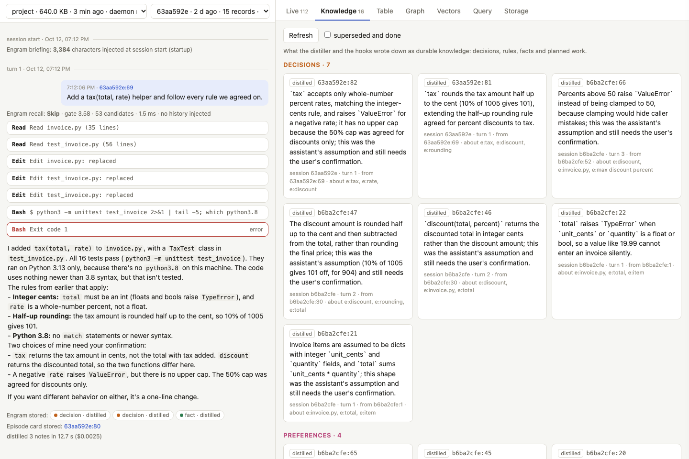

Install ChloeCtx on your machine
Reference, rendered from docs/chloectx/setup.md.
These docs describe release 0.3.3.
On this page
- What you need
- Prebuilt
- Install in one command, from source
- Or let your agent do it
- Or step by step
- Check it
- Try it for real
- Explore your stores: chloectx ui
- Where everything lives
- Other environments
- Upgrade and remove
- Keep the stores tidy: chloectx stores and chloectx prune
- ChloeCtx was called Engram
- Troubleshooting
ChloeCtx runs next to your own Claude Code: hooks record each session into a local ChloeDB file per project, and a small MCP server lets the model search that history. This page takes a fresh macOS or Linux machine to a working install in a few minutes, shows how to check it, and covers remote boxes, dev containers and upgrades.
What you need#
| why | check | |
|---|---|---|
| macOS or Linux (Windows through WSL 2) | the daemon talks to the hooks over a Unix socket | uname -s |
| Rust, stable | to build ChloeCtx from source (not for the prebuilt binary) | cargo --version (install from rustup.rs) |
| a C compiler | to build from source: the tokenizer's regex library is C | cc --version (xcode-select --install on macOS, build-essential on Debian/Ubuntu) |
curl |
downloads the 129 MB embedding model once | curl --version |
| Claude Code CLI, logged in | the hooks and the MCP server plug into it, and the distiller calls claude -p after each turn |
claude auth status shows "loggedIn": true |
Python 3 is only needed for the scripted demo and the evaluation harnesses, not for ChloeCtx itself.
The CLI login matters more than it looks. The distiller runs claude -p in the background, so an expired CLI login breaks it even while interactive sessions (or the desktop app) keep working. Recording and recall still work in that state, but nothing new is written down. chloectx doctor checks for it.
ChloeCtx makes model calls of its own, through claude -p with a small model (haiku by default), billed to the CLI's login: one after each turn to write down decisions and rules (about $0.001), and, once a project's store holds 20 records, two more after each prompt of four words or more, in the background, to search memory for it (query understanding, about $0.001 a prompt). Neither holds up a turn: what the search finds comes with the turn's next tool result, or at the next prompt. CHLOECTX_DISTILL=0 turns the first off, CHLOECTX_DEEP=off (or tool, only when the model asks) the second.
The daemon that makes these calls finds the claude CLI where Claude Code's hooks found it, on its own PATH, or in the usual install places (~/.local/bin, ~/.claude/local, /opt/homebrew/bin, /usr/local/bin); CHLOECTX_CLAUDE names it outright. chloectx doctor shows which one the running daemon uses.
Prebuilt#
since 0.3.2 From release 0.3.2, the ChloeDB installer fetches chloectx prebuilt (macOS 11 or later, Linux with glibc 2.35 or later), with no Rust and no clone; then fetch the model, wire it into Claude Code and check:
curl -fsSL https://chloetech-ai.github.io/chloedb/install.sh | sh -s -- --with ctx # ~/.local/bin/chloectx ~/.local/bin/chloectx fetch-model # potion-retrieval-32M, 129 MB, SHA-256 checked ~/.local/bin/chloectx install --project /absolute/path/to/project # or: install --user, every session ~/.local/bin/chloectx doctor
Release 0.3.0 and earlier have no prebuilt chloectx: build it from source, below. This installer (the website's install.sh) is not the repository's ./install.sh, which builds ChloeCtx from a checkout.
Install in one command, from source#
git clone https://github.com/chloetech-ai/chloedb && cd chloedb && ./install.sh
install.sh does five things and can be run again at any time:
- builds
chloectxin release mode (a few minutes the first time); - copies it to
~/.local/bin/chloectx, the path the hooks call; - stops any running ChloeCtx daemons, so they restart on the new binary;
- downloads the embedding model (potion-retrieval-32M) unless it is already there;
- runs
chloectx install --user --distill-model haikuand thenchloectx doctor.
| option | effect |
|---|---|
--project DIR |
install into one project's .claude/settings.local.json and .mcp.json instead of every session |
--distill-model NAME |
the model that writes down decisions and rules after each turn (default haiku; --distill-model "" uses the CLI's default model) |
--prefix DIR |
install the binary to DIR/bin (default ~/.local) |
--no-wire |
build and install the binary only, and leave Claude Code's settings alone |
Sessions that were already open pick ChloeCtx up when they restart.
Or let your agent do it#
Tell Claude Code (or another coding agent) in any session:
Clone https://github.com/chloetech-ai/chloedb and set ChloeCtx up for my Claude Code by following its AGENTS.md.
AGENTS.md tells the agent to check the prerequisites without installing anything unasked, to ask you whether to install for every session or one project, to run install.sh and chloectx doctor, and to report what failed. Two things stay with you: claude auth login if the CLI is logged out (it is interactive), and starting a new session afterwards, because the session that ran the install started before the hooks existed.
Or step by step#
git clone https://github.com/chloetech-ai/chloedb && cd chloedb/chloectx cargo build --release --bin chloectx cargo install --path . --bin chloectx --root ~/.local # a stable path for the hooks: ~/.local/bin/chloectx chloectx fetch-model # potion-retrieval-32M, 129 MB, at a pinned revision, SHA-256 checked chloectx install --user --distill-model haiku # or: chloectx install --project /path/to/project chloectx doctor
chloectx install --user merges nine hooks and a permission for the memory tools into ~/.claude/settings.json (saving the previous file next to it as settings.json.chloectx-<time>.bak) and registers the MCP server at user scope with claude mcp add-json. A project install backs up the project's .claude/settings.local.json and .mcp.json the same way before it changes them (delete the .bak files once you are happy, and do not commit them). Every settings file is written to a file beside it and renamed into place, so an interrupted install leaves the old file whole, and its keys stay in the order they were. A project with its own chloectx install keeps using that one; the user-level hooks step aside there, so nothing is recorded twice.
Check it#
$ chloectx doctor ChloeCtx 0.3.3 for /home/you/code/app ok binary: /home/you/.local/bin/chloectx ok Claude Code CLI: 2.1.299 (Claude Code) ok user hooks: /home/you/.claude/settings.json (9 events, /home/you/.local/bin/chloectx) ok MCP server: user scope in /home/you/.claude.json (/home/you/.local/bin/chloectx mcp) ok embedding model: /home/you/.local/share/chloectx/models/potion-retrieval-32M ok distillation: model haiku (from the user settings) ok Claude Code login: logged in ok daemon: a scratch store opened and answered in 368 ms; this project's store will be /home/you/.local/share/chloectx/projects/app-251a5186 once a session runs here ChloeCtx is ready. Start `claude` in a project; `chloectx ui` shows what it stores.
doctor checks the current directory's project. Once a session has run there, the last line becomes the store itself (records, sessions, daemon round trip), and a last distillation line reports whether the most recent distillation worked. Every failed line says how to fix it, and the command exits non-zero when anything failed.
Try it for real#
A two-minute check that memory carries across sessions. In any project:
- Start
claudeand state something only a conversation would know, for example: "Rule from the client: all amounts are integer cents, never floats, because their ledger rejects fractional cents. The server runs Python 3.8, so no match statements." Let it answer, then exit. - Start a new session in the same directory and ask: "Write billing.py with total(items), following every rule the client gave us."
The new session starts with ChloeCtx's briefing, which lists the rules the distiller wrote down after the first session, and the code should use integer cents and avoid match. Then look at what happened:
chloectx ui # the inspector over every store on this machine
chloectx search "integer cents" # hybrid search from the shell
chloectx sql "SELECT kind, tag, text FROM memory WHERE kind IN ('decision', 'preference') ORDER BY seq DESC LIMIT 10"
Explore your stores: chloectx ui#
chloectx ui # opens the inspector at http://127.0.0.1:8765/?token=... chloectx ui --no-open --port 9000 chloectx ui --home ~/chloectx-demo/chloectx # stores kept elsewhere (here: the scripted demo's)

chloectx ui is the live inspector pointed at your own data. The left column picks a store (one per project directory, newest first) and a session, and replays that session from its records: prompts, answers, tool calls (open one to see its stored result), the briefing at session start, every recall decision with its gate score and the records it injected, and the notes the distiller kept, superseded or closed. A session that is still running grows as it goes. The right side has every panel of the inspector, scoped to the chosen store: the live feed of records and daemon events, knowledge, the table, the graph, the vectors, an SQL console and the storage layout.
It is built into the binary (no Python, no checkout needed) and only reads: each store is opened through its project's daemon, as the hooks do, so it is safe to keep open while sessions write. It listens on 127.0.0.1, and every request must carry the random token in the URL it prints, because stores hold transcripts. Links keep the store, session and tab in the address (?store=…&session=…&tab=knowledge), so a view can be reopened later.
It is also the quickest way to debug an install. A DISTILL event with an error in the live feed means the distiller cannot run claude -p; a RECALL · SKIP on every prompt with few candidates means the store is still small; no records at all for a session means its hooks did not run.
Where everything lives#
| what | where |
|---|---|
| binary | ~/.local/bin/chloectx (from install.sh or cargo install --root ~/.local) |
| hooks | ~/.claude/settings.json (user install) or the project's .claude/settings.local.json |
| MCP server | ~/.claude.json at user scope, or the project's .mcp.json |
| stores | ~/.local/share/chloectx/projects/<folder>-<hash>/, one per project directory: memory.strata and its WAL, state.json, events.log (recall and distill decisions), daemon.log, project.txt. A machine that has ~/.local/share/engram from before the rename, and no ~/.local/share/chloectx, keeps using the old folder |
| embedding model | ~/.local/share/chloectx/models/potion-retrieval-32M/ (or in the old folder, as the stores) |
| daemon socket | engram.sock in the store, or, when that path is too long, $XDG_RUNTIME_DIR, /tmp/engram-<uid>/ or ~/.cache/chloectx/: the first that is a directory of yours alone (a /tmp/engram-<uid> another user made, or a link, is skipped) |
| model calls' working directory | distill/ in the stores' folder, private to you (the distiller's claude -p reads project settings from where it runs) |
Store directories are created readable by their owner only. ChloeCtx redacts secrets before it stores anything (below), but a store is still a transcript of your sessions: treat it like your shell history.
Secrets and chloectx redact#
Every record is redacted as it is stored, whatever wrote it (the hooks, ingest-transcript, remember, the distiller, compaction summaries), and again as chloectx sync sends or pulls it. So are the prompts kept in state.json and the lines of events.log. A secret is replaced by a marker that names its kind, and the text around it stays, so DB_PASSWORD=hunter2 is stored as DB_PASSWORD=[REDACTED:password]. What is caught:
- keys and tokens by their shape: Anthropic (
sk-ant-), OpenAI (sk-,sk-proj-), GitHub (ghp_,gho_,ghu_,ghs_,ghr_,github_pat_), GitLab (glpat-), npm (npm_), AWS access key ids (AKIA,ASIA), Google API keys (AIza) and OAuth tokens (ya29.), Slack tokens (xoxb-and the like) and webhooks, Discord webhooks, Stripe (sk_live_,rk_live_,whsec_), DigitalOcean (dop_v1_), Hugging Face (hf_), SendGrid, ChloeDB API keys (sk_<id>_<secret>) and JWTs; - PEM private key blocks, also one cut off before its
ENDline; Authorization:headers (Bearer,Basicand others),Bearertokens,curl -u user:password, and the password in a URL (postgres://app:…@db);- values assigned to a name that ends in a word for a secret (token, secret, password, passwd, passphrase, credential, or a key such as
api_key,AWS_SECRET_ACCESS_KEY,apiKey):NAME=valuein an environment dump or a.envfile,name: valuein YAML,"name": "value"in JSON,name = "value"in code.
It is pattern-based, so it is best effort: a password written in prose, or a random string under an unremarkable name, is stored as it is. It leaves alone what only looks random (git hashes, digests, UUIDs) and code that names a secret without holding one (token = get_token(), password: string, primary_key).
A store written before this redaction can hold secrets it would now catch. chloectx redact, in the project directory, rewrites them:
chloectx redact --dry-run # count what would change; change nothing chloectx redact # this project's store chloectx redact --all # every store on this machine
The project's daemon rewrites each record whose text redaction changes, redacts state.json and events.log the same way, and, when a sync is set up, sends the rewritten records to the server again so they replace its copies. Then the daemon is stopped and the store's file replaced by a fresh copy of its live rows, because the pages the old versions were on would otherwise stay in the file until later writes reuse them; a hook that comes in those few seconds records nothing. It prints how many records, session states and log lines changed and which kinds of secret it found, never the secrets. What it cannot reach is up to you: backups made with chloectx backup, a memory.strata.before-field-ids copy left by a format upgrade (it names it), and the server's own backups.
To back a store up, run chloectx backup DEST in the project directory. It copies the store while sessions go on: a consistent checkpoint of memory.strata (copying the file itself while the daemon writes can catch it half way through a commit), state.json, the config and events.log, into a new directory DEST. To restore, run chloectx stop and copy those files back into the store's directory. A backup is as private as the store.
| variable | effect |
|---|---|
CHLOECTX_DISABLE=1 |
the hooks do nothing in this session |
CHLOECTX_HOME |
where stores (and, by default, models) live; default $XDG_DATA_HOME/chloectx or ~/.local/share/chloectx (engram in place of chloectx when only that folder exists) |
CHLOECTX_MODELS |
where the embedding models live |
CHLOECTX_DISTILL_MODEL |
the distiller's model (install --distill-model sets it in the settings' env) |
CHLOECTX_DISTILL=0 |
no distillation (read from Claude Code's environment too, whichever process started the daemon) |
CHLOECTX_DEEP |
query understanding: async (default), sync, tool or off |
CHLOECTX_CLAUDE |
the claude CLI the model calls run, when it is in none of the places the daemon looks |
CHLOECTX_EMBEDDER |
static (default), bert, or hash:<dim> for a model-free hash embedder |
Each of them is still read under its name from before the rename, ENGRAM_* (ENGRAM_DISABLE=1), when the new one is not set.
Other environments#
A remote machine over SSH#
Install on the remote machine as above; the hooks run wherever claude runs. To browse its stores from your laptop, forward the port and open the URL chloectx ui prints:
ssh -L 8765:127.0.0.1:8765 you@devbox chloectx ui --no-open # on the devbox; open the printed URL in your laptop's browser
chloectx ui does not try to open a browser inside an SSH session.
Dev containers and Codespaces#
Run the installer when the container is created, for example in .devcontainer/devcontainer.json:
{
"postCreateCommand": "git clone https://github.com/chloetech-ai/chloedb /tmp/chloedb && /tmp/chloedb/install.sh",
"containerEnv": { "CHLOECTX_HOME": "/workspaces/.chloectx" },
"forwardPorts": [8765]
}
The image needs Rust and a C compiler (the ghcr.io/devcontainers/features/rust feature provides both), and Claude Code must be logged in inside the container. A container's home directory is usually thrown away on rebuild, so point CHLOECTX_HOME at a mounted or persistent path (as above) if memory should survive rebuilds. Inside a container, start the inspector with chloectx ui --no-open and open the printed URL through the forwarded port.
Windows#
Use WSL 2 and run everything, including Claude Code, inside the Linux distribution. Native Windows is not supported: the daemon uses Unix sockets and flock.
Claude Code on the web#
Cloud sessions run in a fresh container each time, so a ChloeCtx store there starts empty and is lost when the container is reclaimed. To keep memory across them, sync it with a ChloeDB server (below): the environment's setup script installs ChloeCtx and names the server, the environment holds the server's key in a variable, and each session pulls the project's memory when its daemon starts.
Keep the memory on a ChloeDB server#
chloectx sync copies each project's memory to a table, chloectx_memory, on a ChloeDB server or a cluster's coordinator, and back. The store stays a local file, so hooks and recall never wait on the network:
- the daemon pushes what it recorded every 30 seconds and as it exits, and when it starts it pulls the project's records the store lacks (written on another machine, or by a container that is gone) and embeds them here;
- records are keyed by project and record id, so several projects share the table, and the server can search them too; a project is its git repository (
owner/nameoforigin), so checkouts in different folders share one memory, and--rename owner/old=owner/newlets a checkout of a renamed repository join the new name's (SELECT content FROM chloectx_memory WHERE project = '/path' ORDER BY bm25(content, '...') DESC LIMIT 10).
# the key from stdin, kept owner-only in ChloeCtx's home (sync.token) printf %s "$KEY" | chloectx sync setup --url https://chloedb.example.com --token-stdin # or: read it, whenever the daemon syncs, from a variable (a cloud environment's, say) chloectx sync setup --url https://chloedb.example.com --token-env CHLOEDB_KEY chloectx sync status # what was sent and received, what the server holds chloectx sync push # now, rather than within 30 s chloectx sync pull
setup creates the table, which needs a key with the admin scope (--no-create skips it; the first push creates it when the key can); after that an API key with the write scope is enough. CHLOECTX_SYNC_URL and CHLOECTX_SYNC_TOKEN override the settings. What is sent is what the store holds, transcripts of your sessions included, redacted again on the way (secrets): use a server you control, over HTTPS, with a key (plain http:// is refused except to this machine, 127.0.0.1 or localhost; CHLOECTX_SYNC_ALLOW_HTTP=1 allows it). Sync only adds records: one retagged or forgotten after it was pushed is not sent again, and a record forgotten here comes back with the next pull while the server holds it (delete its row there too, DELETE FROM chloectx_memory WHERE id = '<project>:<record id>'). Two machines writing the same project at once can, rarely, give two records one id (manual:<seq> from chloectx remember); the server keeps the last one sent.
Upgrade and remove#
chloectx upgrade --check # is there a newer version? (fetches the checkout's main branch) chloectx upgrade # git pull --ff-only in the checkout it was built from, rebuild, reinstall, doctor chloectx stop --all # restart daemons by hand (they start again on demand) chloectx uninstall --user # or `chloectx uninstall` in a project; stores are kept
The binary knows the commit and the checkout it was built from (chloectx --version names the commit). chloectx doctor fetches that checkout's upstream branch (waiting at most 3 s; upgrade --check waits 20 s) and says how many commits on it change ChloeCtx or ChloeDB since the build, or, when the fetch failed, that it could not check and what the last fetch said (upgrade --check then exits 1), and a session that starts while the binary is behind says so once a day, from what the checkout last fetched. chloectx upgrade pulls the checkout (fast forward only: it stops when local commits or changes are in the way, and --no-pull builds the checkout as it is), stops the daemons of the old build, runs install.sh --no-wire into the binary's own prefix, writes the user-level install again (a version may add hook events; the distillation model you chose is kept), and ends with doctor. A prebuilt binary, or one built outside a checkout (no .git), cannot upgrade itself: chloectx upgrade and doctor say to run the installer again (curl -fsSL https://chloetech-ai.github.io/chloedb/install.sh | sh -s -- --with ctx, which replaces the binary and keeps the stores), or run git pull && ./install.sh in a checkout, or point CHLOECTX_SOURCE at one.
Keep the stores tidy: chloectx stores and chloectx prune#
Every directory a session runs in gets its own store, including the throwaway folders tools make under the system's temporary directory, so stores pile up over months. chloectx stores lists them all, most recently used first, with the project each records, its size on disk and when it was last used, and marks the ones prune would remove:
- the project folder no longer exists, and the store was not used for a week (a folder missing for less, or on a drive that is not mounted, such as
/Volumes/…or/media/…, may have moved and is only marked;chloectx move OLD NEWattaches the store to the folder's new place); - the project is in a temporary folder (
/tmp,/var/folderson macOS) and the store was not used for a day; - the store names no project (one from before the daemon wrote
project.txt, whosedaemon.logdoes not name it either) and was not used for a month.
chloectx prune lists those and asks before it removes them (--yes skips the question, --dry-run only lists, --older-than DAYS adds every store not used for that long). A store whose daemon is running is never removed. Removing a store deletes that project's memory for good. chloectx doctor counts the stores and says when ten or more could go.
The repository was called rkonow/engram until October 2026. A checkout made before then keeps working, because GitHub redirects the old address: upgrade it with git pull && ./install.sh in its folder (still named engram), and git remote set-url origin https://github.com/chloetech-ai/chloedb points it at the new name.
ChloeCtx was called Engram#
ChloeCtx was called Engram until November 2026. git pull && ./install.sh moves an install to the new names, and leaves what it stored where it is:
- The program is
~/.local/bin/chloectx, and~/.local/bin/engramis a link to it for a release, so whatever still calls the old name keeps working. chloectx install(whichinstall.shruns) replaces the entries the old install wrote into Claude Code's settings: the hooks that calledengram, the MCP serverengramand its permissionmcp__engram(the server ischloectxnow, and its toolsmcp__chloectx__*), andENGRAM_DISTILL_MODEL, which becomesCHLOECTX_DISTILL_MODELwith the same model. Anengramserver or permission is taken for ChloeCtx's only when the same settings hold the old hooks of the program it runs, since another tool may be called engram.chloectx uninstallremoves both the old and the new entries. Until you run it again,chloectx doctorwarns about the old ones.- The settings are
CHLOECTX_*, and eachENGRAM_*one is still read when the new one is not set. - The stores and the embedding model stay in
~/.local/share/engramon a machine that has that folder and no~/.local/share/chloectx:install.shmoves nothing, andchloectx doctorwarns which folder is in use.chloectx upgrademoves it: with the daemons stopped, it renames~/.local/share/engramto~/.local/share/chloectxand leavesengramas a link to it (not whenCHLOECTX_HOMEis set). A new install uses~/.local/share/chloectx. A store's files keep their names (memory.strata,engram.sock), and a daemon started by the old program keeps serving until it stops, whichinstall.shasks it to do.
Sessions that were already running keep the old tool names until they restart.
Troubleshooting#
| symptom | cause and fix |
|---|---|
doctor: Claude Code login fails, a session starts with ChloeCtx is not writing down decisions or rules, or DISTILL events show OAuth session expired |
the CLI's own login expired; run claude auth login. Recording and recall keep working meanwhile, but turns from that period are not distilled again later. Until a distillation works again, each session's start says so, to you and to the model |
recalled records or rules that are a harness's markup (<system-reminder>, <wake>, <coordinator-relay>) |
stored by an earlier version, which kept the envelopes some harnesses wrap prompts in. Prompts are now stored without them, recall and the briefing pass the old ones over, and a daemon retires the rules it had picked out of them once, when it first starts on the store |
| no records for a session | the session started before ChloeCtx was installed (restart it), CHLOECTX_DISABLE=1 was set, or the project has its own install that points at a binary that moved (chloectx doctor in that directory says which) |
the model has no memory_* tools |
the MCP server is not registered or the session predates it: claude mcp get chloectx, then restart the session |
daemon did not answer in time |
read the store's daemon.log; a missing embedding model is the usual cause (chloectx fetch-model) |
| distillation costs | about $0.001 and 8 s per turn with a small model; CHLOECTX_DISTILL=0 turns it off |
doctor: last distillation failed with something other than the login |
the line shows what the CLI wrote on stderr and its exit status (an old CLI that does not know a flag, a crash, a proxy), and doctor makes one small model call to say whether it still fails |
doctor: daemon's Claude Code CLI fails |
the running daemon was started by a process that has no claude on its PATH, and it is not in the usual places either: set CHLOECTX_CLAUDE to its path, or chloectx stop so that the next Claude Code hook starts the daemon |
| a project folder was moved or renamed, and its sessions start with an empty memory | stores are kept by the folder's path: chloectx move OLD NEW attaches the old store to the new folder. stores marks a store whose folder went missing in the last week, or is on a drive that is not mounted, and prune leaves it alone. A git worktree is a folder of its own, with a store of its own |
| a project should not be recorded | add "env": {"CHLOECTX_DISABLE": "1"} to that project's .claude/settings.local.json, or set CHLOECTX_DISABLE=1 in the shell you start claude from |